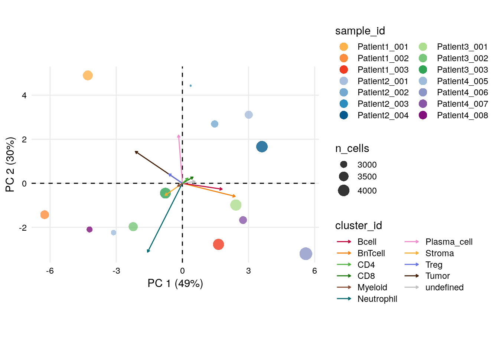

10 Single cell visualization
The following section describes typical approaches for visualizing single-cell data.
This chapter is divided into three parts. Section 10.2 will highlight visualization approaches downstream of cell type classification from Section 9.3. We will then focus on visualization methods that relate single-cell data to the sample level in Section 10.3. Lastly, Section 10.4 will provide a more customized example on how to integrate various single-cell and sample metadata into one heatmap using the ComplexHeatmap package (Gu, Eils, and Schlesner 2016).
Visualization functions from popular R packages in single-cell research such as scater, DittoSeq and CATALYST will be utilized. We will recycle methods and functions that we have used in previous sections, while also introducing new ones.
Please note that this chapter aims to provide an overview on common visualization options and should be seen as a stepping-stone. However, many more options exist and the user should customize the visualization according to the biological question at hand.
10.1 Load data
First, we will read in the previously generated SpatialExperiment
object.
For visualization purposes, we will define markers that were used for cell type classification and markers that can indicate a specific cell state (e.g., Ki67 for proliferating cells).
# Define cell phenotype markers
type_markers <- c("Ecad", "CD45RO", "CD20", "CD3", "FOXP3", "CD206", "MPO",
"SMA", "CD8a", "CD4", "HLADR", "CD15", "CD38", "PDGFRb")
# Define cell state markers
state_markers <- c("CarbonicAnhydrase", "Ki67", "PD1", "GrzB", "PDL1",
"ICOS", "TCF7", "VISTA")
# Add to spe
rowData(spe)$marker_class <- ifelse(rownames(spe) %in% type_markers, "type",
ifelse(rownames(spe) %in% state_markers, "state",
"other"))10.2 Cell-type level
In the first section of this chapter, the grouping-level for the visualization approaches will be the cell type classification from Section 9.3. Other grouping levels (e.g., cluster assignments from Section 9.2) are possible and the user should adjust depending on the chosen analysis workflow.
10.2.1 Dimensionality reduction visualization
As seen before, we can visualize single-cells in low-dimensional space. Often, non-linear methods for dimensionality reduction such as tSNE and UMAP are used. They aim to preserve the distances between each cell and its neighbors in the high-dimensional space.
Interpreting these plots is not trivial, but local neighborhoods in the plot can suggest similarity in expression for given cells. See Orchestrating Single-Cell Analysis with Bioconductor for more details.
Here, we will use dittoDimPlot from the
DittoSeq
package and plotReducedDim from the
scater package
to visualize the fastMNN-corrected UMAP colored by cell type and
expression (using the asinh-transformed intensities), respectively.
Both functions are highly flexible and return ggplot objects which can
be further modified.
library(dittoSeq)
library(scater)
library(patchwork)
library(cowplot)
library(viridis)
## UMAP colored by cell type and expression - dittoDimPlot
p1 <- dittoDimPlot(spe,
var = "celltype",
reduction.use = "UMAP_mnnCorrected",
size = 0.2,
do.label = TRUE) +
scale_color_manual(values = metadata(spe)$color_vectors$celltype) +
theme(legend.title = element_blank()) +
ggtitle("Cell types on UMAP, integrated cells")
p2 <- dittoDimPlot(spe,
var = "Ecad",
assay = "exprs",
reduction.use = "UMAP_mnnCorrected",
size = 0.2,
colors = viridis(100),
do.label = TRUE) +
scale_color_viridis()
p1 + p2
The plotReducedDim function of the scater package provides an alternative
way for visualizing cells in low dimensions. Here, we loop over all type
markers, generate one plot per marker and plot the indivudual plots side-by-side.
# UMAP colored by expression for all markers - plotReducedDim
plot_list <- lapply(rownames(spe)[rowData(spe)$marker_class == "type"], function(x){
p <- plotReducedDim(spe,
dimred = "UMAP_mnnCorrected",
colour_by = x,
by_exprs_values = "exprs",
point_size = 0.2)
return(p)
})
plot_grid(plotlist = plot_list)
10.2.2 Heatmap visualization
Next, it is often useful to visualize single-cell expression per cell
type in form of a heatmap. For this, we will use the dittoHeatmap
function from the
DittoSeq
package.
We sub-sample the dataset to 4000 cells for ease of visualization and overlay the cancer type and patient ID from which the cells were extracted.
set.seed(220818)
cur_cells <- sample(seq_len(ncol(spe)), 4000)
# Heatmap visualization - DittoHeatmap
dittoHeatmap(spe[,cur_cells],
genes = rownames(spe)[rowData(spe)$marker_class == "type"],
assay = "exprs",
cluster_cols = FALSE,
scale = "none",
heatmap.colors = viridis(100),
annot.by = c("celltype", "indication", "patient_id"),
annotation_colors = list(indication = metadata(spe)$color_vectors$indication,
patient_id = metadata(spe)$color_vectors$patient_id,
celltype = metadata(spe)$color_vectors$celltype))
Similarly, we can visualize the mean marker expression per cell type for all
cells bu first calculating the mean marker expression per cell type using the
aggregateAcrossCells function from the
scuttle
package and then use dittoHeatmap. We will annotate the heatmap with the
number of cells per cell type and we will used different ways for feature
scaling.
library(scuttle)
## aggregate by cell type
celltype_mean <- aggregateAcrossCells(as(spe, "SingleCellExperiment"),
ids = spe$celltype,
statistics = "mean",
use.assay.type = "exprs",
subset.row = rownames(spe)[rowData(spe)$marker_class == "type"])
# No scaling
dittoHeatmap(celltype_mean,
assay = "exprs",
cluster_cols = TRUE,
scale = "none",
heatmap.colors = viridis(100),
annot.by = c("celltype", "ncells"),
annotation_colors = list(celltype = metadata(spe)$color_vectors$celltype,
ncells = plasma(100)))
# Scaled to max
dittoHeatmap(celltype_mean,
assay = "exprs",
cluster_cols = TRUE,
scaled.to.max = TRUE,
heatmap.colors.max.scaled = inferno(100),
annot.by = c("celltype", "ncells"),
annotation_colors = list(celltype = metadata(spe)$color_vectors$celltype,
ncells = plasma(100)))
# Z score scaled
dittoHeatmap(celltype_mean,
assay = "exprs",
cluster_cols = TRUE,
annot.by = c("celltype", "ncells"),
annotation_colors = list(celltype = metadata(spe)$color_vectors$celltype,
ncells = plasma(100)))
As illustrated above for not-, max-, and Z score-scaled expression values, different ways of scaling can have strong effects on visualization output and we encourage the user to test multiple options.
Overall, we can observe cell-type specific marker expression (e.g., Tumor = Ecad high and B cells = CD20 high) in agreement with the gating scheme of Section 9.3.
10.2.3 Violin plot visualization
The plotExpression function from the
scater package
allows to plot the distribution of expression values across cell types
for a chosen set of proteins. The output is a ggplot object which can be
modified further.
# Violin Plot - plotExpression
plotExpression(spe[,cur_cells],
features = rownames(spe)[rowData(spe)$marker_class == "type"],
x = "celltype",
exprs_values = "exprs",
colour_by = "celltype") +
theme(axis.text.x = element_text(angle = 90))+
scale_color_manual(values = metadata(spe)$color_vectors$celltype)
10.2.4 Scatter plot visualization
Moreover, a protein expression based scatter plot can be generated with
dittoScatterPlot (returns a ggplot object). We overlay the plot with
the cell type information.
# Scatter plot
dittoScatterPlot(spe,
x.var = "CD3",
y.var="CD20",
assay.x = "exprs",
assay.y = "exprs",
color.var = "celltype") +
scale_color_manual(values = metadata(spe)$color_vectors$celltype) +
ggtitle("Scatterplot for CD3/CD20 labelled by celltype")
We can nicely observe how the B next to T cell phenotype (BnTcell)
has high expression values for both CD20 and CD3.
Of note, in a setting where the user aims to assign labels to clusters based on marker genes/proteins, all of the above plots can be particularly helpful.
10.2.5 Barplot visualization
In order to display frequencies of cell types per sample/patient, the
dittoBarPlot function will be used. Data can be represented as
percentages or counts and again ggplot objects are outputted.
# by sample_id - percentage
dittoBarPlot(spe,
var = "celltype",
group.by = "sample_id") +
scale_fill_manual(values = metadata(spe)$color_vectors$celltype)
# by patient_id - percentage
dittoBarPlot(spe,
var = "celltype",
group.by = "patient_id") +
scale_fill_manual(values = metadata(spe)$color_vectors$celltype)
# by patient_id - count
dittoBarPlot(spe,
scale = "count",
var = "celltype",
group.by = "patient_id") +
scale_fill_manual(values = metadata(spe)$color_vectors$celltype)
We can see that cell type frequencies change between samples/patients and that the highest proportion/counts of plasma cells and stromal cells can be observed for Patient 2 and Patient 4, respectively.
10.2.6 CATALYST-based visualization
In the following, we highlight some useful visualization functions from the CATALYST package.
To this end, we will first convert the SpatialExperiment object into a
CATALYST-compatible format.
library(CATALYST)
# Save SPE in CATALYST-compatible object with renamed colData entries and
# new metadata information
spe_cat <- spe
spe_cat$sample_id <- factor(spe$sample_id)
spe_cat$condition <- factor(spe$indication)
spe_cat$cluster_id <- factor(spe$celltype)
# Add celltype information to metadata
metadata(spe_cat)$cluster_codes <- data.frame(celltype = factor(spe_cat$celltype))All of the CATALYST functions presented below return ggplot objects,
which allow flexible downstream adjustment.
10.2.6.1 Pseudobulk-level MDS plot
Pseudobulk-level multi-dimensional scaling (MDS) plots can be rendered
with the exported pbMDS function.
Here, we will use pbMDS to highlight expression similarities between
cell types and subsequently for each celltype-sample-combination.
# MDS pseudobulk by cell type
pbMDS(spe_cat,
by = "cluster_id",
features = rownames(spe_cat)[rowData(spe_cat)$marker_class == "type"],
label_by = "cluster_id",
k = "celltype") +
scale_color_manual(values = metadata(spe_cat)$color_vectors$celltype)
# MDS pseudobulk by cell type and sample_id
pbMDS(spe_cat,
by = "both",
features = rownames(spe_cat)[rowData(spe_cat)$marker_class == "type"],
k = "celltype",
shape_by = "condition",
size_by = TRUE) +
scale_color_manual(values = metadata(spe_cat)$color_vectors$celltype)
We can see that the pseudobulk-expression profile of neutrophils seems markedly distinct from the other cell types, while comparable cell types such as the T cell subtypes group together. Furthermore, pseudobulk cell-type profiles from SCCHN appear different from the other indications.
10.2.6.2 Reduced dimension plot on CLR of proportions
The clrDR function produces dimensionality reduction plots on centered
log-ratios (CLR) of sample/cell type proportions across cell
type/samples.
As with pbMDS, the output plots aim to illustrate the degree of
similarity between cell types based on sample proportions.
# CLR on cluster proportions across samples
clrDR(spe_cat,
dr = "PCA",
by = "cluster_id",
k = "celltype",
label_by = "cluster_id",
arrow_col = "sample_id",
point_pal = metadata(spe_cat)$color_vectors$celltype) 
We can again observe that neutrophils have a divergent profile also in terms of their sample proportions.
10.2.6.3 Pseudobulk expression boxplot
The plotPbExprs generates combined box- and jitter-plots of aggregated marker
expression per cell type and sample (image). Here, we further split the data by
cancer type.
plotPbExprs(spe_cat,
k = "celltype",
facet_by = "cluster_id",
ncol = 2,
features = rownames(spe_cat)[rowData(spe_cat)$marker_class == "type"]) +
scale_color_manual(values = metadata(spe_cat)$color_vectors$indication)
Notably, CD15 levels are elevated in SCCHN in comparison to all other indications for most cell types.
10.3 Sample-level
In the next section, we will shift the grouping-level focus from the cell type to the sample-level. Sample-levels will be further divided into the sample-(image) and patient-level.
Although we will mostly repeat the functions from the previous section 10.2, sample- and patient-level centered visualization can provide additional quality control and biological interpretation.
10.3.1 Dimensionality reduction visualization
Visualization of low-dimensional embeddings, here comparing non-corrected and fastMNN-corrected UMAPs, and coloring it by sample-levels is often used for batch effect assessment as mentioned in Section 7.4.
We will again use dittoDimPlot.
## UMAP colored by cell type and expression - dittoDimPlot
p1 <- dittoDimPlot(spe,
var = "sample_id",
reduction.use = "UMAP",
size = 0.2,
colors = viridis(100),
do.label = FALSE) +
scale_color_manual(values = metadata(spe)$color_vectors$sample_id) +
theme(legend.title = element_blank()) +
ggtitle("Sample ID")
p2 <- dittoDimPlot(spe,
var = "sample_id",
reduction.use = "UMAP_mnnCorrected",
size = 0.2,
colors = viridis(100),
do.label = FALSE) +
scale_color_manual(values = metadata(spe)$color_vectors$sample_id) +
theme(legend.title = element_blank()) +
ggtitle("Sample ID")
p3 <- dittoDimPlot(spe,
var = "patient_id",
reduction.use = "UMAP",
size = 0.2,
do.label = FALSE) +
scale_color_manual(values = metadata(spe)$color_vectors$patient_id) +
theme(legend.title = element_blank()) +
ggtitle("Patient ID")
p4 <- dittoDimPlot(spe,
var = "patient_id",
reduction.use = "UMAP_mnnCorrected",
size = 0.2,
do.label = FALSE) +
scale_color_manual(values = metadata(spe)$color_vectors$patient_id) +
theme(legend.title = element_blank()) +
ggtitle("Patient ID")
(p1 + p2) / (p3 + p4)
As illustrated in Section 8, we see that the fastMNN approach (right side of the plot) leads to mixing of cells across samples/patients and thus batch effect correction.
10.3.2 Heatmap visualization
It can be beneficial to use a heatmap to visualize single-cell
expression per sample and patient. Such a plot, which we will create
using dittoHeatmap, can highlight biological differences across
samples/patients.
# Heatmap visualization - DittoHeatmap
dittoHeatmap(spe[,cur_cells],
genes = rownames(spe)[rowData(spe)$marker_class == "type"],
assay = "exprs",
order.by = c("patient_id","sample_id"),
cluster_cols = FALSE,
scale = "none",
heatmap.colors = viridis(100),
annot.by = c("celltype", "indication", "patient_id", "sample_id"),
annotation_colors = list(celltype = metadata(spe)$color_vectors$celltype,
indication = metadata(spe)$color_vectors$indication,
patient_id = metadata(spe)$color_vectors$patient_id,
sample_id = metadata(spe)$color_vectors$sample_id))
As in Section 7.3, aggregated mean marker expression per sample/patient allow identification of samples/patients with outlying expression patterns.
Here, we will focus on the patient level and use aggregateAcrossCells
and dittoHeatmap. The heatmap will be annotated with the number of
cells per patient and cancer type and displayed using two scaling
options.
# mean expression by patient_id
patient_mean <- aggregateAcrossCells(as(spe, "SingleCellExperiment"),
ids = spe$patient_id,
statistics = "mean",
use.assay.type = "exprs",
subset.row = rownames(spe)[rowData(spe)$marker_class == "type"])
# No scaling
dittoHeatmap(patient_mean,
assay = "exprs",
cluster_cols = TRUE,
scale = "none",
heatmap.colors = viridis(100),
annot.by = c("patient_id","indication","ncells"),
annotation_colors = list(patient_id = metadata(spe)$color_vectors$patient_id,
indication = metadata(spe)$color_vectors$indication,
ncells = plasma(100)))
# Max expression scaling
dittoHeatmap(patient_mean,
assay = "exprs",
cluster_cols = TRUE,
scaled.to.max = TRUE,
heatmap.colors.max.scaled = inferno(100),
annot.by = c("patient_id","indication","ncells"),
annotation_colors = list(patient_id = metadata(spe)$color_vectors$patient_id,
indication = metadata(spe)$color_vectors$indication,
ncells = plasma(100)))
As seen before, CD15 levels are elevated in Patient 4 (SCCHN), while SMA levels are highest for Patient 4 (CRC).
10.3.3 Barplot visualization
Complementary to displaying cell type frequencies per sample/patient, we
can use dittoBarPlot to display sample/patient frequencies per cell
type.
dittoBarPlot(spe,
var = "patient_id",
group.by = "celltype") +
scale_fill_manual(values = metadata(spe)$color_vectors$patient_id)
dittoBarPlot(spe,
var = "sample_id",
group.by = "celltype") +
scale_fill_manual(values = metadata(spe)$color_vectors$sample_id)
Patient2 has the highest and lowest proportion of plasma cells and
neutrophils, respectively.
10.3.4 CATALYST-based visualization
10.3.4.1 Pseudobulk-level MDS plot
Expression-based pseudobulks for each sample can be compared with the
pbMDS function.
# MDS pseudobulk by sample_id
pbMDS(spe_cat,
by = "sample_id",
color_by = "sample_id",
features = rownames(spe_cat)[rowData(spe_cat)$marker_class == "type"]) +
scale_color_manual(values = metadata(spe_cat)$color_vectors$sample_id)
There are marked differences in pseudobulk-expression patterns between samples and across patients, which can be driven by biological differences and also technical aspects such as divergent region selection.
10.3.4.2 Reduced dimension plot on CLR of proportions
The clrDR function can also be used to analyze similarity of samples
based on cell type proportions.
# CLR on sample proportions across clusters
clrDR(spe_cat,
dr = "PCA",
by = "sample_id",
point_col = "sample_id",
k = "celltype",
point_pal = metadata(spe_cat)$color_vectors$sample_id) +
scale_color_manual(values = metadata(spe_cat)$color_vectors$celltype)## Scale for colour is already present.
## Adding another scale for colour, which will replace the existing scale.
There are notable differences between samples based on their cell type proportions.
Interestingly, Patient3_001, Patient1_003, Patient4_007 and
Patient4_006 group together and the PC loadings indicate a strong
contribution of BnT and B cells, which could propose formation of
tertiary lymphoid structures (TLS). In section 12.2, we
will be able to confirm this hypothesis visually on the images.
10.4 Further examples
In the last section of this chapter, we will use the popular ComplexHeatmap package to create a visualization example that combines various cell-type- and sample-level information.
ComplexHeatmap is highly versatile and is originally inspired from the pheatmap package. Therefore, many arguments have the same/similar names.
For more details, we would recommend to read the reference book.
10.4.1 Publication-ready ComplexHeatmap
For this example, we will concatenate heatmaps and annotations horizontally into one rich heatmap list. The grouping-level for the visualization will again be the cell type information from Section 9.3
Initially, we will create two separate Heatmap objects for cell type
and state markers.
Then, metadata information, including the cancer type proportion and
number of cells/patients per cell type, will be extracted into
HeatmapAnnotation objects.
Notably, we will add spatial features per cell type, here the number of
neighbors extracted from colPair(spe) and cell area, in another
HeatmapAnnotation object.
Ultimately, all objects are combined in a HeatmapList and visualized.
library(ComplexHeatmap)
library(circlize)
library(tidyverse)
set.seed(22)
### 1. Heatmap bodies ###
# Heatmap body color
col_exprs <- colorRamp2(c(0,1,2,3,4),
c("#440154FF","#3B518BFF","#20938CFF",
"#6ACD5AFF","#FDE725FF"))
# Create Heatmap objects
# By cell type markers
celltype_mean <- aggregateAcrossCells(as(spe, "SingleCellExperiment"),
ids = spe$celltype,
statistics = "mean",
use.assay.type = "exprs",
subset.row = rownames(spe)[rowData(spe)$marker_class == "type"])
h_type <- Heatmap(t(assay(celltype_mean, "exprs")),
column_title = "type_markers",
col = col_exprs,
name= "mean exprs",
show_row_names = TRUE,
show_column_names = TRUE)
# By cell state markers
cellstate_mean <- aggregateAcrossCells(as(spe, "SingleCellExperiment"),
ids = spe$celltype,
statistics = "mean",
use.assay.type = "exprs",
subset.row = rownames(spe)[rowData(spe)$marker_class == "state"])
h_state <- Heatmap(t(assay(cellstate_mean, "exprs")),
column_title = "state_markers",
col = col_exprs,
name= "mean exprs",
show_row_names = TRUE,
show_column_names = TRUE)
### 2. Heatmap annotation ###
### 2.1 Metadata features
anno <- colData(celltype_mean) %>% as.data.frame %>% select(celltype, ncells)
# Proportion of indication per celltype
indication <- unclass(prop.table(table(spe$celltype, spe$indication), margin = 1))
# Number of contributing patients per celltype
cluster_PID <- colData(spe) %>%
as.data.frame() %>%
select(celltype, patient_id) %>%
group_by(celltype) %>% table() %>%
as.data.frame()
n_PID <- cluster_PID %>%
filter(Freq>0) %>%
group_by(celltype) %>%
count(name = "n_PID") %>%
column_to_rownames("celltype")
# Create HeatmapAnnotation objects
ha_anno <- HeatmapAnnotation(celltype = anno$celltype,
border = TRUE,
gap = unit(1,"mm"),
col = list(celltype = metadata(spe)$color_vectors$celltype),
which = "row")
ha_meta <- HeatmapAnnotation(n_cells = anno_barplot(anno$ncells, width = unit(10, "mm")),
n_PID = anno_barplot(n_PID, width = unit(10, "mm")),
indication = anno_barplot(indication,width = unit(10, "mm"),
gp = gpar(fill = metadata(spe)$color_vectors$indication)),
border = TRUE,
annotation_name_rot = 90,
gap = unit(1,"mm"),
which = "row")
### 2.2 Spatial features
# Add number of neighbors to spe object (saved in colPair)
spe$n_neighbors <- countLnodeHits(colPair(spe, "neighborhood"))
# Select spatial features and average over celltypes
spatial <- colData(spe) %>%
as.data.frame() %>%
select(area, celltype, n_neighbors)
spatial <- spatial %>%
select(-celltype) %>%
aggregate(by = list(celltype = spatial$celltype), FUN = mean) %>%
column_to_rownames("celltype")
# Create HeatmapAnnotation object
ha_spatial <- HeatmapAnnotation(
area = spatial$area,
n_neighbors = spatial$n_neighbors,
border = TRUE,
gap = unit(1,"mm"),
which = "row")
### 3. Plot rich heatmap ###
# Create HeatmapList object
h_list <- h_type +
h_state +
ha_anno +
ha_spatial +
ha_meta
# Add customized legend for anno_barplot()
lgd <- Legend(title = "indication",
at = colnames(indication),
legend_gp = gpar(fill = metadata(spe)$color_vectors$indication))
# Plot
draw(h_list,annotation_legend_list = list(lgd))
This plot summarizes most of the information we have seen in this chapter previously. In addition, we can observe that tumor cells have the largest mean cell area, high number of neighbors and elevated Ki67 expression. BnT cells have the highest number of neighbors on average, which is biological sound given their predominant location in highly immune infiltrated regions (such as TLS).
10.4.2 Interactive visualization
For interactive visualization of the single-cell data the iSEE shiny application can be used. For a comprehensive tutorial, please refer to the iSEE vignette.
10.5 Session Info
SessionInfo
## R version 4.3.2 (2023-10-31)
## Platform: x86_64-pc-linux-gnu (64-bit)
## Running under: Ubuntu 22.04.3 LTS
##
## Matrix products: default
## BLAS: /usr/lib/x86_64-linux-gnu/openblas-pthread/libblas.so.3
## LAPACK: /usr/lib/x86_64-linux-gnu/openblas-pthread/libopenblasp-r0.3.20.so; LAPACK version 3.10.0
##
## locale:
## [1] LC_CTYPE=en_US.UTF-8 LC_NUMERIC=C
## [3] LC_TIME=en_US.UTF-8 LC_COLLATE=en_US.UTF-8
## [5] LC_MONETARY=en_US.UTF-8 LC_MESSAGES=en_US.UTF-8
## [7] LC_PAPER=en_US.UTF-8 LC_NAME=C
## [9] LC_ADDRESS=C LC_TELEPHONE=C
## [11] LC_MEASUREMENT=en_US.UTF-8 LC_IDENTIFICATION=C
##
## time zone: Etc/UTC
## tzcode source: system (glibc)
##
## attached base packages:
## [1] grid stats4 stats graphics grDevices utils datasets
## [8] methods base
##
## other attached packages:
## [1] lubridate_1.9.3 forcats_1.0.0
## [3] stringr_1.5.1 dplyr_1.1.4
## [5] purrr_1.0.2 readr_2.1.4
## [7] tidyr_1.3.0 tibble_3.2.1
## [9] tidyverse_2.0.0 circlize_0.4.15
## [11] ComplexHeatmap_2.18.0 CATALYST_1.26.0
## [13] viridis_0.6.4 viridisLite_0.4.2
## [15] cowplot_1.1.2 patchwork_1.1.3
## [17] scater_1.30.1 scuttle_1.12.0
## [19] dittoSeq_1.14.0 ggplot2_3.4.4
## [21] SpatialExperiment_1.12.0 SingleCellExperiment_1.24.0
## [23] SummarizedExperiment_1.32.0 Biobase_2.62.0
## [25] GenomicRanges_1.54.1 GenomeInfoDb_1.38.5
## [27] IRanges_2.36.0 S4Vectors_0.40.2
## [29] BiocGenerics_0.48.1 MatrixGenerics_1.14.0
## [31] matrixStats_1.2.0
##
## loaded via a namespace (and not attached):
## [1] RColorBrewer_1.1-3 jsonlite_1.8.8
## [3] shape_1.4.6 magrittr_2.0.3
## [5] magick_2.8.2 ggbeeswarm_0.7.2
## [7] TH.data_1.1-2 farver_2.1.1
## [9] rmarkdown_2.25 GlobalOptions_0.1.2
## [11] zlibbioc_1.48.0 vctrs_0.6.5
## [13] Cairo_1.6-2 DelayedMatrixStats_1.24.0
## [15] RCurl_1.98-1.13 rstatix_0.7.2
## [17] htmltools_0.5.7 S4Arrays_1.2.0
## [19] plotrix_3.8-4 BiocNeighbors_1.20.1
## [21] broom_1.0.5 SparseArray_1.2.3
## [23] sass_0.4.8 bslib_0.6.1
## [25] plyr_1.8.9 sandwich_3.1-0
## [27] zoo_1.8-12 cachem_1.0.8
## [29] igraph_1.6.0 lifecycle_1.0.4
## [31] iterators_1.0.14 pkgconfig_2.0.3
## [33] rsvd_1.0.5 Matrix_1.6-4
## [35] R6_2.5.1 fastmap_1.1.1
## [37] GenomeInfoDbData_1.2.11 clue_0.3-65
## [39] digest_0.6.33 colorspace_2.1-0
## [41] ggnewscale_0.4.9 irlba_2.3.5.1
## [43] ggpubr_0.6.0 beachmat_2.18.0
## [45] labeling_0.4.3 cytolib_2.14.0
## [47] timechange_0.2.0 fansi_1.0.6
## [49] colorRamps_2.3.1 nnls_1.5
## [51] polyclip_1.10-6 abind_1.4-5
## [53] compiler_4.3.2 withr_2.5.2
## [55] doParallel_1.0.17 ConsensusClusterPlus_1.66.0
## [57] backports_1.4.1 BiocParallel_1.36.0
## [59] carData_3.0-5 highr_0.10
## [61] ggforce_0.4.1 ggsignif_0.6.4
## [63] MASS_7.3-60 drc_3.0-1
## [65] DelayedArray_0.28.0 rjson_0.2.21
## [67] FlowSOM_2.10.0 gtools_3.9.5
## [69] tools_4.3.2 vipor_0.4.7
## [71] beeswarm_0.4.0 glue_1.6.2
## [73] Rtsne_0.17 cluster_2.1.4
## [75] reshape2_1.4.4 generics_0.1.3
## [77] gtable_0.3.4 tzdb_0.4.0
## [79] hms_1.1.3 data.table_1.14.10
## [81] BiocSingular_1.18.0 ScaledMatrix_1.10.0
## [83] car_3.1-2 utf8_1.2.4
## [85] XVector_0.42.0 ggrepel_0.9.4
## [87] foreach_1.5.2 pillar_1.9.0
## [89] splines_4.3.2 flowCore_2.14.0
## [91] tweenr_2.0.2 lattice_0.21-9
## [93] survival_3.5-7 RProtoBufLib_2.14.0
## [95] tidyselect_1.2.0 knitr_1.45
## [97] gridExtra_2.3 bookdown_0.37
## [99] xfun_0.41 pheatmap_1.0.12
## [101] stringi_1.8.3 yaml_2.3.8
## [103] evaluate_0.23 codetools_0.2-19
## [105] cli_3.6.2 munsell_0.5.0
## [107] jquerylib_0.1.4 Rcpp_1.0.11
## [109] png_0.1-8 XML_3.99-0.16
## [111] parallel_4.3.2 sparseMatrixStats_1.14.0
## [113] bitops_1.0-7 mvtnorm_1.2-4
## [115] scales_1.3.0 ggridges_0.5.5
## [117] crayon_1.5.2 GetoptLong_1.0.5
## [119] rlang_1.1.2 multcomp_1.4-25